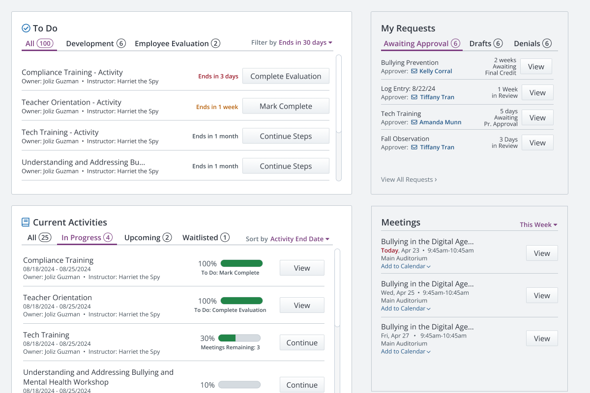
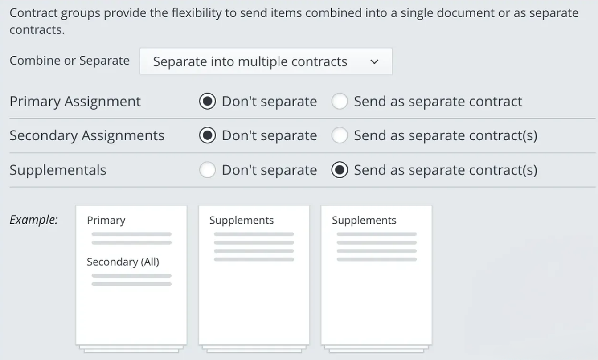

glabbeltran
I am a product designer, tech tinkerer, and spinner based in Miami, FL and I've spent most of my career in B2B enterprise SaaS. I believe constraints are design material.
Current
June 2026
Finishing case studies and seeking Senior Product Designer roles in B2B enterprise SaaS, regulated industries, and other complex products. Tinkering with AI tools. Always iterating.
Work

Removing the friction that cost teachers their raises.
From Friction to Focus
Frontline Education
Dashboard Redesign
Shipping Summer 2026

Increasing confidence during a high-volume week in K–12 hiring.
Reducing Risk and Support Burden
Frontline Education
Workflow Redesign
Shipped

How I made a mandatory account change feel like an upgrade.
Zero Tickets on Launch Day
Frontline Education
B2C · Account Migration
Shipped